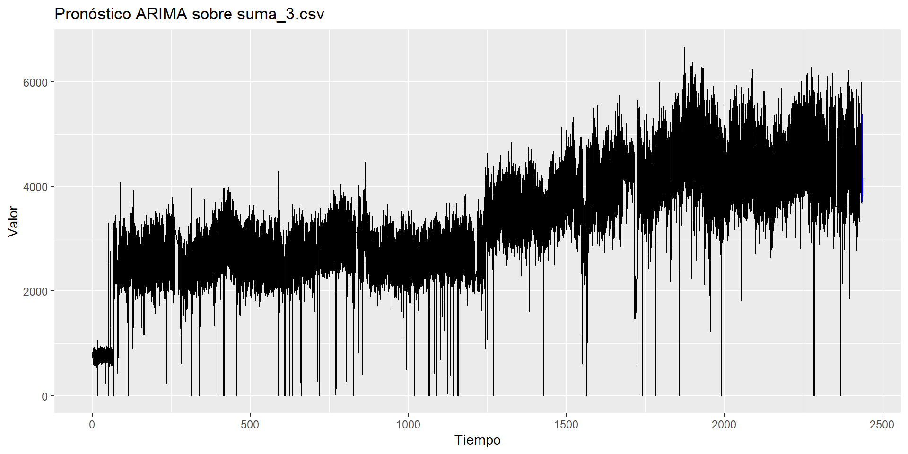
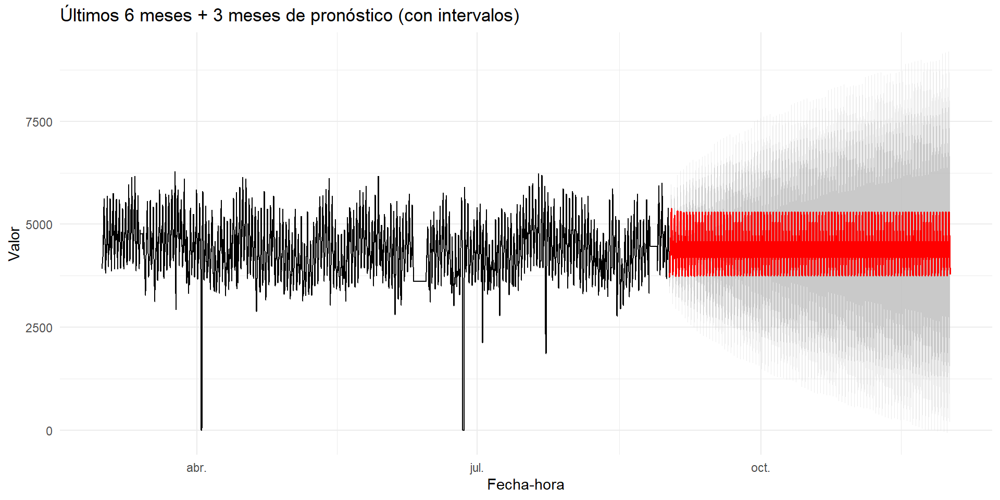

6 Modelos estacionarios - Metodología Box-Jenkins
6.1 Introducción
En esta actividad del Módulo 2, Unidad 2 aplicamos la metodología Box–Jenkins sobre una serie de tiempo horaria que contiene los datos potencia de salida de una subestación eléctrica con tres circuitos.
El archivo tiene:
FECHA: fecha–horaVALOR_IMPUTADO: valor numérico (con algunos NA)
Antes de modelar, interpolaremos los NA para poder aplicar ADF, ACF/PACF y ARIMA sin errores.
6.2 Carga de datos
# Ajusta esta ruta a tu PC
csv_dir <- "C:/Users/Lenovo/PUJ Cali/OSCAR VELASQUEZ CHALA - Proyecto Aplicado - Proy. Demanda Electrica/2. Fuentes de Datos"
csv_name <- "suma_3.csv"
ruta_archivo <- file.path(csv_dir, csv_name)
datos_raw <- read.csv(ruta_archivo,
header = TRUE,
sep = ",",
stringsAsFactors = FALSE)
str(datos_raw)## 'data.frame': 58448 obs. of 2 variables:
## $ FECHA : chr "2019-01-01 00:00:00" "2019-01-01 01:00:00" "2019-01-01 02:00:00" "2019-01-01 03:00:00" ...
## $ VALOR_IMPUTADO: num 778 766 765 735 731 ...## FECHA VALOR_IMPUTADO
## 1 2019-01-01 00:00:00 778.2125
## 2 2019-01-01 01:00:00 766.2975
## 3 2019-01-01 02:00:00 764.6450
## 4 2019-01-01 03:00:00 734.6750
## 5 2019-01-01 04:00:00 731.0275
## 6 2019-01-01 05:00:00 735.75006.3 Limpieza e imputación de faltantes
datos <- datos_raw %>%
janitor::clean_names() %>% # fecha, valor_imputado
mutate(
fecha = lubridate::ymd_hms(fecha)
) %>%
arrange(fecha)
# Comprobar NA en la serie
cat("Cantidad de datos faltates, dataset original: ", sum(is.na(datos$valor_imputado)),"\n")## Cantidad de datos faltates, dataset original: 456# Interpolar NA para no romper la serie horaria
# (usa método de forecast, respeta patrones)
serie_sin_na <- forecast::na.interp(datos$valor_imputado)
# Volvemos a pegar a los datos
datos <- datos %>%
mutate(valor_imputado = serie_sin_na)
# Comprobar NA en la serie
cat("Cantidad de datos faltates, despues de la imputación: ", sum(is.na(datos$valor_imputado)),"\n")## Cantidad de datos faltates, despues de la imputación: 0## Resumen Serie de Datos - Potencia Subestación Electrica## Min. 1st Qu. Median Mean 3rd Qu. Max.
## 0 2593 3194 3308 4068 66766.4 Creación de la serie de tiempo
Es una serie horaria → usamos frecuencia 24 (24 obs = 1 día).
## Time Series:
## Start = c(1, 1)
## End = c(1, 6)
## Frequency = 24
## [1] 778.2125 766.2975 764.6450 734.6750 731.0275 735.75006.5 Exploración inicial

## Min. 1st Qu. Median Mean 3rd Qu. Max.
## 0 2593 3194 3308 4068 6676Se observa una tendencia creciente en los valores a lo largo del tiempo. Esto indica que, en promedio, los valores potencia aumentan progresivamente, sobre todo a partir de la mitad de la serie. Esto sugiere que la serie no es estacionaria en nivel, por lo que requerirá diferenciación (al menos una vez) para aplicar correctamente un modelo ARIMA.
El valor medio es de ≈3308, pero hay una gran dispersión (de 0 a 6676).
La asimetría positiva (cola hacia la derecha) se nota en que la media > mediana, lo que indica presencia de valores atípicos altos.
El rango intercuartílico (4068–2593 = 1475) sugiere variabilidad notable incluso entre valores centrales.
La serie presenta fluctuaciones bruscas (picos y caídas intensas). Esto puede deberse a variaciones horarias (por ejemplo, demanda, flujo o carga) con ciclos diarios.
Podría haber componentes estacionales (cada 24 horas o cada semana), visibles como “bandas” de oscilación repetitiva.
Existen observaciones con valor cercano a 0, muy por debajo del comportamiento típico. Esto puede representar horas sin registro, fallas o eventos extremos.
Los valores tienden a crecer con el tiempo, manteniendo una variabilidad considerable y ciclos repetitivos, lo que sugiere que la serie responde a un fenómeno con tendencia positiva y fluctuaciones horarias marcadas.
6.6 Estacionariedad (ADF) y ACF/PACF
Verificamos estacionariedad de la serie aplicando el test de Dickey-Fuller aumentada.
##
## Augmented Dickey-Fuller Test
##
## data: serie_ts
## Dickey-Fuller = -14.565, Lag order = 38, p-value = 0.01
## alternative hypothesis: stationarypar(mfrow = c(1,2))
Acf(serie_ts, main = "ACF serie original")
Pacf(serie_ts, main = "PACF serie original")
Interpretación prueba de Dickey–Fuller aumentada (ADF)
Hipótesis nula (H₀): la serie no es estacionaria.
Hipótesis alternativa (H₁): la serie es estacionaria.
El p-valor = 0.01 < 0.05, se rechaza la hipótesis nula (H₀), la serie es estacionaria.
La serie de tiempo puede considerarse estacionaria en nivel (sin necesidad de diferenciación adicional).
El resultado sugiere que la serie se mantiene estable en su media y varianza a lo largo del tiempo.
Interpretación Autocorrelación (ACF)
La ACF muestra valores muy altos y lentamente decrecientes, con un patrón oscilante y periódico (las barras suben y bajan en forma de ondas regulares). Esto indica la presencia de una fuerte estacionalidad y una posible autocorrelación prolongada entre observaciones separadas por intervalos fijos (lags).
El patrón de repetición parece producirse cada 24 rezagos, lo cual coincide con la frecuencia horaria diaria establecida para esta serie (24 horas).
La serie presenta una estructura cíclica o estacional de 24 horas, con una alta correlación entre valores próximos en el tiempo. La lentitud en el decaimiento confirma que la serie es altamente persistente y tiene una memoria larga.
Interpretación Autocorrelación Parcial (PACF)
En la grafica PACF se observa un pico muy alto en el primer rezago (lag = 1), seguido de valores que decrecen y fluctúan alrededor de cero. Esto sugiere que el comportamiento actual depende principalmente del valor inmediatamente anterior (autoregresión de orden 1), mientras que los efectos de rezagos posteriores se diluyen rápidamente. No obstante, se observan pequeños picos periódicos alrededor de los múltiplos de 24 (lag ≈ 24, 48), lo que refuerza la hipótesis de una componente estacional diaria.
El corte brusco en el primer rezago (lag = 1) sugiere una componente autoregresiva (AR) de bajo orden, probablemente AR(1), mientras que los picos en múltiplos de 24 apuntan a un posible componente estacional AR(1) con periodo 24.
Los gráficos orientan hacia modelos del tipo ARIMA(1,0,0)(1,0,0)[24], donde:
p = 1 → autoregresivo de orden 1 (por PACF),
d = 0 → la serie ya es estacionaria (por ADF),
q = 0 → no se observa corte abrupto en la ACF,
(P,D,Q)[24] → componente estacional con periodo 24 (por patrón repetitivo en ACF/PACF).
Las funciones ACF y PACF de la serie de potencia eléctrica evidencian un comportamiento altamente correlacionado en el corto plazo y una fuerte estacionalidad diaria (cada 24 horas). Se recomienda probar modelos con componente autoregresiva simple (AR(1)) y término estacional (P=1, periodo=24), verificando su ajuste con criterios AIC/BIC y el análisis de residuos.
d_sugerido <- forecast::ndiffs(serie_ts)
cat("Diferenciaciones sugeridas por ndiffs:", d_sugerido, "\n")## Diferenciaciones sugeridas por ndiffs: 1##
## Augmented Dickey-Fuller Test
##
## data: serie_diff1
## Dickey-Fuller = -55.722, Lag order = 38, p-value = 0.01
## alternative hypothesis: stationarypar(mfrow = c(1,2))
Acf(serie_diff1, main = "ACF 1ra diferencia")
Pacf(serie_diff1, main = "PACF 1ra diferencia")
Interpretación prueba de Dickey–Fuller aumentada (ADF) de la serie diferenciada
Hipótesis nula (H₀): la serie no es estacionaria.
Hipótesis alternativa (H₁): la serie es estacionaria.
El p-valor = 0.01 < 0.05, se rechaza la hipótesis nula (H₀), la serie es estacionaria.
Interpretación Autocorrelación (ACF) de la serie diferenciada
La ACF muestra que la mayoría de las barras están dentro de las bandas azules (intervalos de confianza), excepto algunos picos notables alrededor de los rezagos 24 y 48. Estos picos recurrentes cada 24 lags confirman una estacionalidad horaria diaria, incluso después de eliminar la tendencia con la primera diferencia. El resto de las autocorrelaciones son pequeñas y se disipan rápidamente, lo cual indica que la serie ya no tiene persistencia fuerte ni tendencia.
La primera diferencia logró eliminar la tendencia y la autocorrelación prolongada, pero aún queda un componente estacional diario que podría modelarse con una parte estacional AR o MA con periodo 24.
Interpretación Autocorrelación Parcial (PACF) de la serie diferenciada
La PACF muestra un pico pequeño pero significativo en lag 1, y otro alrededor de lag 24, mientras los demás valores se mantienen cerca de cero. Este patrón sugiere que la serie diferenciada tiene un componente autoregresivo de corto plazo (AR(1)) y una componente estacional autoregresiva (AR(1) estacional).
La estructura sugiere un modelo con un término AR(1) y un posible componente AR(1) estacional con periodo 24, lo que respalda la idea de un ARIMA(1,1,0)(1,0,0)[24] o similar.
En conclusión, Luego de aplicar la primera diferencia, la serie se vuelve estacionaria, eliminando la tendencia observada en el nivel original. Sin embargo, persisten picos en múltiplos de 24, lo que indica una estacionalidad horaria. Por tanto, un modelo apropiado podría ser un ARIMA(1,1,0)(1,0,0)[24], donde: la primera diferencia (d=1) captura la tendencia, el término AR(1) modela la autocorrelación inmediata y el término AR(1) estacional modela los ciclos diarios.
6.7 Modelo ARIMA (Box–Jenkins)
modelo_auto <- forecast::auto.arima(
serie_ts,
seasonal = TRUE, # intenta estacionalidad diaria (24)
stepwise = FALSE,
approximation = TRUE
)
modelo_auto## Series: serie_ts
## ARIMA(3,0,0)(2,1,0)[24]
##
## Coefficients:
## ar1 ar2 ar3 sar1 sar2
## 1.0357 -0.2212 0.0816 -0.6358 -0.3182
## s.e. 0.0041 0.0059 0.0042 0.0039 0.0039
##
## sigma^2 = 26493: log likelihood = -380417.2
## AIC=760846.5 AICc=760846.5 BIC=760900.4## [1] 760846.5## [1] 760900.4Interpretación resultado auto.arima
El algoritmo auto.arima() escogió el siguiente modelo:
ARIMA(3,0,0)(2,1,0)[24]
Modelo AutoRegresivo Integrado de Media Móvil con:
3 términos autorregresivos no estacionales (AR(3)). El valor actual depende de los tres valores anteriores inmediatos. Captura la inercia o persistencia de corto plazo.
0 diferencias no estacionales (d = 0). No se necesitó diferencia no estacional, la serie es estacionaria en nivel, como confirmó la prueba ADF (p-value = 0.01).
sin componente de media móvil (q = 0).
2 términos autorregresivos estacionales (P = 2). Se incorporaron dos términos AR estacionales (SAR1, SAR2) para modelar la estructura diaria.
1 diferencia estacional (D = 1). Se aplicó una diferenciación estacional (D=1) para eliminar los ciclos repetitivos.
sin componenete de Media móvil estacional.
Un periodo estacional de 24, es decir, un ciclo diario (horario → 24 horas).
El modelo ARIMA(3,0,0)(2,1,0)[24] describe una serie con dependencia de corto plazo (cada valor depende de los 3 anteriores), con comportamiento estacional diario y con fluctuaciones moderadas alrededor de un nivel estable.
El valor de potencia eléctrica en una hora depende fuertemente de las tres horas previas y también del comportamiento del mismo periodo en los dos días anteriores.
6.8 Comparación de modelos (AIC/BIC)
# Modelo ARIMA según ACF/PACF, serie orginal --> **ARIMA(1,0,0)(1,0,0)[24]**
modelo_alt1 <- forecast::Arima(
serie_ts,
order = c(1, 0, 0), # (p,d,q) no estacional
seasonal = list(
order = c(1, 0, 0), # (P,D,Q) estacional
period = 24 # s = 24
)
)
# Modelo ARIMA según ACF/PACF, serie diferenciada --> **ARIMA(1,1,0)(1,0,0)[24]**
modelo_alt2 <- forecast::Arima(
serie_ts,
order = c(1, 1, 0), # (p,d,q) no estacional
seasonal = list(
order = c(1, 0, 0), # (P,D,Q) estacional
period = 24 # s = 24
)
)
tibble::tibble(
modelo = c("auto.arima()=ARIMA(3,0,0)(2,1,0)[24]", "ARIMA(1,0,0)(1,0,0)[24]", "ARIMA(1,1,0)(1,0,0)[24]"),
AIC = c(AIC(modelo_auto), AIC(modelo_alt1), AIC(modelo_alt2)),
BIC = c(BIC(modelo_auto), BIC(modelo_alt1), BIC(modelo_alt2))
)## # A tibble: 3 × 3
## modelo AIC BIC
## <chr> <dbl> <dbl>
## 1 auto.arima()=ARIMA(3,0,0)(2,1,0)[24] 760847. 760900.
## 2 ARIMA(1,0,0)(1,0,0)[24] 769852. 769888.
## 3 ARIMA(1,1,0)(1,0,0)[24] 769697. 769724.AIC (Akaike Information Criterion) Evalúa la calidad del modelo considerando el ajuste y el número de parámetros. Cuanto menor sea el AIC, mejor el equilibrio entre ajuste y complejidad.
BIC (Bayesian Information Criterion) Evalúa la calidad del modelo considerando el ajuste y el número de parámetros, pero penaliza más la cantidad de parámetros. Cuanto menor sea el BIC, mejor, especialmente para modelos más simples y generalizables.
El ARIMA(3,0,0)(2,1,0)[24] es el modelo más adecuado porque presenta los menores valores de AIC y BIC, lo que indica un mejor ajuste sin sobreparametrización.
Los otros modelos (ARIMA(1,0,0)(1,0,0)[24] y ARIMA(1,1,0)(1,0,0)[24]) son más parsimoniosos, pero no logran capturar la complejidad temporal y estacional de la serie.
La diferencia de casi 9000 unidades en AIC es muy grande, lo que refuerza que el modelo ganador tiene una capacidad predictiva muy superior.
El modelo ARIMA(3,0,0)(2,1,0)[24] logra equilibrar correctamente la dependencia temporal a corto plazo (AR(3)), la estructura estacional diaria (SAR(2) con periodo 24) y la estabilidad lograda mediante una diferencia estacional (D=1). Sus criterios AIC y BIC significativamente más bajos indican que este modelo representa mejor el comportamiento real de la serie que las alternativas más simples.
6.9 Diagnóstico

##
## Ljung-Box test
##
## data: Residuals from ARIMA(3,0,0)(2,1,0)[24]
## Q* = 1969.2, df = 43, p-value < 2.2e-16
##
## Model df: 5. Total lags used: 48Ljung-Box test
- p-value < 2.2e-16, se rechaza H₀ (los residuos son ruido blanco). Los residuos no son ruido blanco, aún contienen autocorrelación significativa no explicada por el modelo. El modelo no captura completamente la estructura temporal de la serie.
Diagnósticos residuales del modelo ARIMA
- Se observa que los residuos oscilan alrededor de cero, lo cual es una buena señal: no hay tendencia sistemática ni acumulación de errores. Sin embargo, todavía hay picos grandes (outliers) que sobresalen en varios puntos, tanto positivos como negativos, indicando que hay algunos valores atípicos o eventos anómalos que el modelo no logra explicar del todo. Aun así, la varianza de los residuos se mantiene más o menos constante, tiene una homocedasticidad razonable.
ACF (Función de Autocorrelación de los residuos)
En el gráfico, la mayoría de los valores están dentro de las bandas azules, pero hay algunos picos leves en múltiplos de 24, lo que sugiere que todavía queda algo de correlación estacional residual. Si el modelo es adecuado, las barras de la ACF deben estar dentro de las bandas azules (intervalos de confianza), lo que indica falta de autocorrelación.
Los residuos no son completamente ruido blanco: hay indicios de correlación estacional leve, posiblemente asociada a patrones diarios que el modelo no capturó totalmente.
Histograma y densidad de los residuos
La distribución de los residuos es centrada en cero. No obstante, la forma es muy aguda (leptocúrtica): la mayoría de los valores están cerca de 0, pero con colas largas (picos extremos en ±4000). Esto indica que los errores no siguen perfectamente una distribución normal, sino que presentan eventos raros de alta magnitud, coherente con los picos observados en la gráfica superior.
Aunque el modelo explica bien la tendencia y estacionalidad, los residuos no son perfectamente normales y muestran valores extremos — posiblemente debidos a shocks o outliers estructurales.
El modelo ARIMA(3,0,0)(2,1,0)[24] captura correctamente la tendencia y la estacionalidad principal, pero no elimina completamente la autocorrelación en los residuos. Persisten dependencias estacionales y algunos valores extremos.
6.10 Pronóstico
h <- 24 # 24 horas siguientes
pronostico <- forecast::forecast(modelo_auto, h = h)
autoplot(pronostico) +
ggplot2::labs(title = "Pronóstico ARIMA sobre suma_3.csv",
x = "Tiempo",
y = "Valor")
6.10.1 Zoom: últimos 7 días + pronóstico
# 7 días en serie horaria = 7 * 24
n_dias <- 7
n_obs_zoom <- n_dias * 24
# Últimas 168 obs reales
datos_zoom <- tail(datos, n_obs_zoom)
# Construir data frame del pronóstico con fecha-hora continua
# última fecha observada:
ultima_fecha <- max(datos$fecha, na.rm = TRUE)
# secuencia de horas posteriores para el forecast
fechas_forecast <- ultima_fecha + lubridate::hours(1:h)
df_forecast <- tibble::tibble(
fecha = fechas_forecast,
valor = as.numeric(pronostico$mean),
tipo = "Pronóstico"
)
df_hist <- tibble::tibble(
fecha = datos_zoom$fecha,
valor = datos_zoom$valor_imputado,
tipo = "Observado"
)
df_plot <- dplyr::bind_rows(df_hist, df_forecast)
ggplot2::ggplot(df_plot, ggplot2::aes(x = fecha, y = valor, color = tipo)) +
ggplot2::geom_line(linewidth = 0.7) +
ggplot2::labs(
title = "Últimos 7 días + 24 horas pronosticadas",
x = "Fecha-hora",
y = "Valor"
) +
ggplot2::scale_color_manual(values = c("Observado" = "black", "Pronóstico" = "red")) +
ggplot2::theme_minimal()
6.10.2 Zoom: últimos 21 días + 7 días de pronóstico
# 1. Parámetros
dias_hist <- 21
dias_forecast <- 7
n_obs_hist <- dias_hist * 24
h <- dias_forecast * 24 # 7 días de pronóstico
# 2. Pronóstico a 7 días
pronostico_7d <- forecast::forecast(modelo_auto, h = h)
# 3. Últimos 21 días observados
datos_zoom21 <- tail(datos, n_obs_hist)
# 4. Fechas para el pronóstico (continuando la última fecha observada)
ultima_fecha <- max(datos$fecha, na.rm = TRUE)
fechas_forecast <- ultima_fecha + lubridate::hours(1:h)
# 5. Data frame del pronóstico con IC
df_forecast <- tibble::tibble(
fecha = fechas_forecast,
media = as.numeric(pronostico_7d$mean),
lower80 = as.numeric(pronostico_7d$lower[,"80%"]),
upper80 = as.numeric(pronostico_7d$upper[,"80%"]),
lower95 = as.numeric(pronostico_7d$lower[,"95%"]),
upper95 = as.numeric(pronostico_7d$upper[,"95%"])
)
# 6. Data frame histórico
df_hist <- tibble::tibble(
fecha = datos_zoom21$fecha,
valor = datos_zoom21$valor_imputado
)
# 7. Gráfico
ggplot2::ggplot() +
# franjas 95%
ggplot2::geom_ribbon(
data = df_forecast,
ggplot2::aes(x = fecha, ymin = lower95, ymax = upper95),
fill = "grey80",
alpha = 0.5
) +
# franjas 80%
ggplot2::geom_ribbon(
data = df_forecast,
ggplot2::aes(x = fecha, ymin = lower80, ymax = upper80),
fill = "grey60",
alpha = 0.5
) +
# serie observada 21 días
ggplot2::geom_line(
data = df_hist,
ggplot2::aes(x = fecha, y = valor),
linewidth = 0.6,
color = "black"
) +
# media pronosticada
ggplot2::geom_line(
data = df_forecast,
ggplot2::aes(x = fecha, y = media),
linewidth = 0.7,
color = "red"
) +
ggplot2::labs(
title = "Últimos 21 días + 7 días pronosticados (con intervalos)",
x = "Fecha-hora",
y = "Valor"
) +
ggplot2::theme_minimal()
6.10.3 Zoom: últimos 6 meses + 3 meses de pronóstico
library(lubridate)
# 1. última fecha del dataset
ultima_fecha <- max(datos$fecha, na.rm = TRUE)
# 2. fecha de corte para los últimos 6 meses
fecha_corte_6m <- ultima_fecha %m-% months(6)
# 3. filtrar últimos 6 meses de datos observados
datos_6m <- datos %>%
dplyr::filter(fecha >= fecha_corte_6m) %>%
dplyr::arrange(fecha)
# 4. definir horizonte de 3 meses por horas
fecha_fin_forecast <- ultima_fecha %m+% months(3)
# diferencia en horas entre última fecha y última + 3 meses
h <- as.numeric(difftime(fecha_fin_forecast, ultima_fecha, units = "hours"))
# por seguridad, si h es 0 (fechas raras), ponemos un mínimo
if (h < 1) h <- 24
# 5. pronóstico a 3 meses (en horas)
pronostico_3m <- forecast::forecast(modelo_auto, h = h)
# 6. construir data frame de fechas futuras
fechas_forecast <- ultima_fecha + hours(1:h)
df_forecast <- tibble::tibble(
fecha = fechas_forecast,
media = as.numeric(pronostico_3m$mean),
lower80 = as.numeric(pronostico_3m$lower[,"80%"]),
upper80 = as.numeric(pronostico_3m$upper[,"80%"]),
lower95 = as.numeric(pronostico_3m$lower[,"95%"]),
upper95 = as.numeric(pronostico_3m$upper[,"95%"])
)
# 7. data frame histórico (6 meses)
df_hist <- tibble::tibble(
fecha = datos_6m$fecha,
valor = datos_6m$valor_imputado
)
# 8. gráfico
ggplot2::ggplot() +
# bandas 95 %
ggplot2::geom_ribbon(
data = df_forecast,
ggplot2::aes(x = fecha, ymin = lower95, ymax = upper95),
fill = "grey85",
alpha = 0.5
) +
# bandas 80 %
ggplot2::geom_ribbon(
data = df_forecast,
ggplot2::aes(x = fecha, ymin = lower80, ymax = upper80),
fill = "grey65",
alpha = 0.5
) +
# serie observada 6 meses
ggplot2::geom_line(
data = df_hist,
ggplot2::aes(x = fecha, y = valor),
color = "black",
linewidth = 0.5
) +
# media pronosticada 3 meses
ggplot2::geom_line(
data = df_forecast,
ggplot2::aes(x = fecha, y = media),
color = "red",
linewidth = 0.6
) +
ggplot2::labs(
title = "Últimos 6 meses + 3 meses de pronóstico (con intervalos)",
x = "Fecha-hora",
y = "Valor"
) +
ggplot2::theme_minimal()
La línea negra (comportamiento observado de la serie) muestra un comportamiento cíclico con picos y valles marcados: aumento durante ciertas horas del día y disminución en otras, consistente con el patrón diario.
La línea roja (pronóstico) proyecta este patrón manteniendo la forma estacional del ciclo, con una amplitud y nivel similares al histórico reciente. No se observan rupturas bruscas: el modelo continúa la dinámica natural del sistema eléctrico.
Las bandas grises representan los intervalos de confianza (80% y 95%). Son estrechas en el corto plazo, lo que indica alta confianza en los pronósticos inmediatos, pero se amplían gradualmente a medida que aumenta el horizonte temporal.
El modelo reproduce adecuadamente la variación intradiaria (24 horas) observada en los días anteriores. Las predicciones son coherentes con la secuencia de consumo reciente y reflejan la persistencia estacional identificada por la ACF/PACF.
El modelo tiene buena capacidad predictiva a corto plazo (1–7 días), manteniendo la coherencia con el patrón estacional. Los intervalos de confianza se ensanchan progresivamente, reflejando la incertidumbre natural del pronóstico a mayor plazo.
En el mediano plazo, el modelo predice una continuidad del patrón histórico, sin cambios estructurales, pero con incertidumbre creciente. Esto es esperable y refleja la naturaleza de los modelos ARIMA: confiables a corto y mediano plazo, pero menos precisos en horizontes largos.
6.11 Conclusiones
## El diagnóstico de residuos del modelo ARIMA(3,0,0)(2,1,0)[24] muestra que la mayoría de los errores se distribuyen alrededor de cero y con varianza estable, lo cual evidencia un ajuste razonable.
## No obstante, los picos extremos y el resultado significativo de la prueba de Ljung–Box (p < 0.05) indican que los residuos aún presentan autocorrelación, especialmente en múltiplos del periodo estacional (24 horas).
## Esto sugiere que el modelo no explica completamente la dinámica diaria de la serie, por lo que podrían probarse variantes con términos adicionales de media móvil o componentes estacionales para mejorar la independencia de los residuos.
##
## El modelo ARIMA(3,0,0)(2,1,0)[24] genera pronósticos coherentes y estacionalmente consistentes con el comportamiento de la serie tiempo de la potencia eléctrica.
## Captura correctamente los ciclos horarios diarios y mantiene la estabilidad en el nivel medio.
## A corto plazo (1–7 días), los pronósticos son confiables y con baja incertidumbre, mientras que a largo plazo (3 meses), el modelo ofrece una proyección conservadora, con intervalos más amplios que reflejan la naturaleza probabilística del proceso.
##
## En nuestra serie de tiempo con estacionalidad diaria (s=24), se considera:
## - Corto plazo: entre 24 y 168 horas (1 a 7 días).
## - Mediano plazo: entre 1 semana y 3 meses.
## - Largo plazo: más de 3 meses.
## En el presente análisis, los pronósticos de 1 y 7 días se interpretan como proyecciones de corto plazo con alta fiabilidad, mientras que los pronósticos a 3 meses constituyen una proyección de mediano a largo plazo, útil para identificar tendencias y variabilidad global, aunque con mayor incertidumbre.